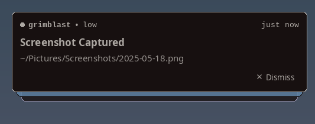

Make yourself at home
Small daemon.
Your rules.
nod is a source-configured notification daemon for X11. It handles standard desktop notifications over native D-Bus, renders folding card stacks with CUI and SDL3, and picks up your desktop's colors from X resources.
By Matteo Merola · Updated October 31, 2026 · View the source
How do I install nod?
Install the system development libraries, clone the repository, and run make. The build fetches a pinned CUI dependency locally and compiles it into a static library. Install nod, the two companion scripts, and their manual pages with sudo make install.
System requirements
- A C11 compiler, GNU make, ar, pkg-config, curl, sha256sum, tar, and Python 3 for the initial dependency download (see the repository build guide). Release source archives bundle CUI and need neither the download nor Python.
- libX11, libXrandr, libXrender, libXext, fontconfig, and libdbus-1 development files.
- SDL3 3.2 or later, FreeType, and HarfBuzz development files.
- An X11 desktop session with a running session D-Bus.
gdbusfrom glib2 for nod-send;dbus-sendfor nod-dnd.
On Arch Linux:
sudo pacman -S base-devel git curl python libx11 libxrandr libxrender libxext \
fontconfig sdl3 freetype2 harfbuzz dbus glib2Build and install:
git clone https://github.com/mattmezza/nod.git
cd nod
make
sudo make installThe default installation prefix is /usr/local. Override it with make PREFIX=/usr and use the same prefix when installing or uninstalling. DESTDIR supports packaging. Run sudo make uninstall to remove installed binaries and manual pages.
The first build prepares build/libcui.a; ordinary app rebuilds reuse it. CUI is pinned so a fresh checkout uses a known version. See the repository for dependency maintenance and offline build details.
How do I start nod?
Start nod inside your X11 session before your window manager. Only one daemon can own org.freedesktop.Notifications. Stop dunst, mako, or your desktop's existing notification service before starting nod.
# ~/.xinitrc (example)
nod &
exec dwmSend a few notifications from a terminal:
notify-send "Hello" "A little nod."
notify-send -u low "Low" "No hurry."
notify-send -u critical "Critical" "Needs your attention."
notify-send -t 3000 "Quick" "Gone after three seconds."
notify-send -r 1 "Updated" "Replace notification 1."
nod -vThe daemon accepts -v to report its version. Other behavior is configured in config.h. Native D-Bus support means standard notification clients can talk to nod directly.
How do notification cards work?
Multiple notifications fold into a deck. Hover over it to unfold the stack and hold all notification timeouts. Notifications enter and leave with animations. Urgency controls colors and default timeouts; critical notifications persist by default.
| Interaction | Result |
|---|---|
| Hover the stack | Unfold cards and hold every timeout while the pointer stays over the stack. |
| Click an action | Emit ActionInvoked and dismiss the card. Up to three action buttons are shown. |
| Click Dismiss or right-click | Dismiss the card without invoking an action. |
| Drag / two-finger swipe | Dismiss toward the screen edge after crossing the configured threshold. |
| Left-click with action_buttons = 0 | Invoke the default action. |
| Timeout | Automatically dismiss after the requested or configured duration. |

How do I configure nod?
The first build copies config.def.h to config.h. Edit your local config.h, rebuild with make, reinstall, and restart nod. There is no runtime configuration file. Xresources themes and the DND toggle are the runtime controls.
$EDITOR config.h
make
sudo make install
# Restart nod in your X11 session.Geometry, placement, and fonts
| Setting | Default | Purpose |
|---|---|---|
| font / mono_font | sans-serif:size=11 / monospace:size=10 | Fontconfig patterns for content and headers. |
| width / max_lines | 500 / 5 | Card width in pixels; body line limit. |
| padding | 14 | Space inside the card. |
| border_width / border_radius | 1 / 4 | Border and corner radius; radius 0 is square. |
| gap_x / gap_y / stack_gap | 13 / 38 / 10 | Screen-edge offsets and spacing between cards. |
| position | TOP_RIGHT | TOP_LEFT, TOP_RIGHT, BOTTOM_LEFT, or BOTTOM_RIGHT. |
| max_visible | 5 | Maximum visible notifications. |
XRandR selects the monitor of the focused window. Font sizes in points use Xft.dpi, with 96 DPI as the fallback. Use pixelsize= in a font pattern for pixel sizing.
Card details and motion
| Setting | Default / behavior |
|---|---|
| show_app, show_urgency, show_time | 1: show app name, urgency, and relative time. |
| divider_top, divider_bottom | 0: header and action dividers are hidden. |
| action_buttons, dismiss_button, show_border | 1: display each of these elements. |
| collapse | 1: fold the deck; 0 keeps a list. |
| peek / max_peek | 8 pixels / 3 cards behind the front card. |
| anim_speed | 14; larger values make motion snappier. |
| swipe_threshold | 0.3 of the card width. |
| timeouts[] | { 5, 10, 0 } seconds for low, normal, critical. 0 means no automatic dismissal. |
Compiled color defaults
bg_colors[], fg_colors[], and accent_colors[] each have low, normal, and critical entries. muted_color covers secondary text. Defaults use a #0d1117 background, blue normal accents, and orange critical accents. X resources override these when use_xresources = 1.
min_contrast = 4.5 nudges accent and secondary text colors toward the foreground to keep palettes readable. critical_tint = 0.14 adds an accent tint to critical cards.
How do Xresources themes work?
nod reads colors and fonts from the X resource database by default. Existing *.background, *.foreground, and *.colorN entries can theme it without nod-specific settings, so wallpaper palettes from pywal or wallust fit naturally. Per-urgency resources let you override only what you need.
| Element | Resource (u = low / normal / critical) | Fallback |
|---|---|---|
| Background | nod.background.u | nod.background, *.background |
| Foreground | nod.foreground.u | nod.foreground, *.foreground |
| Border, dot, buttons | nod.accent.u | nod.border.u alias; *.color8 / *.color4 / *.color1 |
| Secondary text | nod.muted | *.color8 |
| Fonts | nod.font, nod.monoFont | config.h |
! ~/.Xresources
nod.font: Noto Sans:size=11
nod.monoFont: JetBrains Mono:size=10
nod.accent.critical: #cc241dxrdb -merge ~/.Xresourcesxresources_poll_ms = 2000 checks for changes every two seconds and repaints. Set it to 0 to disable polling, then reload explicitly:
killall -USR1 nodCompositors and rounded corners
With a compositor, nod uses a 32-bit window for real transparency and antialiased corners. Without one, X Shape provides a corner mask. Let nod draw its own corners; exclude it from picom's extra blur and rounding:
blur-background-exclude = [ "class_g = 'nod'" ];
rounded-corners-exclude = [ "class_g = 'nod'" ];How do I set quiet hours?
Use nod-dnd or click nod's circle icon in an XEmbed system tray to toggle do not disturb. A slash in the tray icon means DND is on. Schedule quiet hours in config.h and rebuild. DND discards new notifications, including critical ones; existing cards remain.
nod-dnd # toggle
nod-dnd on
nod-dnd off
nod-dnd statusEach command prints on or off and requires dbus-send plus a running nod daemon. The tray icon appears only when an X11 system tray is available.
Weekly schedules
dnd_schedule[7][4] has one row per day, Sunday through Saturday. Each row is { start_hour, start_minute, end_hour, end_minute } in local time. An end before the start crosses midnight into the following day.
static const int dnd_schedule[7][4] = {
{-1, 0, 0, 0}, /* Sunday: disabled */
{22, 0, 7, 30}, /* Monday 22:00 → Tuesday 07:30 */
{22, 0, 7, 30}, /* Tuesday */
{22, 0, 7, 30}, /* Wednesday */
{22, 0, 7, 30}, /* Thursday */
{-1, 0, 0, 0}, /* Friday: disabled */
{-1, 0, 0, 0}, /* Saturday: disabled */
};A start hour of -1 disables a row; equal start and end times disable it too. Manual toggles last until the next scheduled state change or nod restart. A schedule-driven change shows a notification with an action to reverse it and updates the tray icon.
Always mute selected apps
static const char *dnd_muted_apps[] = {
"Example App", "Another App", NULL
};Names match exactly, ignoring case. App muting applies independently of DND and drops new notifications from those apps at all times.
How do I script notifications with nod-send?
nod-send is a notify-send-compatible POSIX shell script that uses gdbus. Send notifications, replace an existing card, wait for dismissal, or capture the key of an invoked action. It is installed alongside nod and also works with other standard notification daemons.
nod-send "Hello" "This is a test"
nod-send -u critical -t 3000 "Critical" "Server down"
# Capture an action (blocks until closed).
key=$(nod-send -A "Open" "New mail" "Click to open inbox")
[ "$key" = "default" ] && xdg-open https://mail.example.com
# Named actions.
nod-send -A open="Open" -A snooze="Snooze" \
"Reminder" "Meeting in 5min"
# Replace a card by its returned ID.
id=$(nod-send -p "Downloading" "0%")
nod-send -r "$id" "Downloading" "42%"| Flag | Behavior |
|---|---|
| -u / --urgency | low, normal, critical (or 0, 1, 2). Default: normal. |
| -t / --expire-time | Milliseconds; -1 uses daemon default, 0 persists. |
| -a / --app-name | App name; default nod-send. |
| -p / --print-id | Print the notification ID after sending. |
| -r / --replace-id | Replace the notification with this ID. |
| -w / --wait | Wait until the notification closes. |
| -A / --action [name=]label | Add an action and wait. Unnamed actions use the key default. |
| -h / --hint type:name:value | Set a hint; types include byte, int, uint32, boolean, double, string. nod meaningfully consumes urgency. |
| -i / --icon, -c / --category, -e / --transient | Accepted for compatibility; ignored by nod. |
| --version, --help | Print version or usage. |
With an action, nod-send prints the invoked key when the notification closes. Dismissal without an action prints no key. Finite waits use the requested timeout plus three seconds of slack; persistent notifications (-t 0) wait indefinitely. With the daemon-default timeout, nod-send uses a 33-second bound. Exit status is 0 on success or 1 for parsing or D-Bus errors.
Read the installed manuals with man nod, man nod-send, and man nod-dnd for the complete local reference.
Troubleshooting
No notifications appear
Run nod in an active X11 session with a session D-Bus. Check whether another notification daemon owns the service. Check nod-dnd status and dnd_muted_apps; muted notifications are discarded, not queued.
The build cannot find SDL
nod needs SDL3, version 3.2 or newer. SDL2 cannot replace it. Verify pkg-config --atleast-version=3.2 sdl3 and install the development packages for all required libraries.
Fonts or colors did not update
Check use_xresources, merge your resources with xrdb, then wait for the polling interval or send SIGUSR1. Font names must be resolvable by fontconfig. Behavior changes in config.h need a rebuild and daemon restart.
The tray icon is missing
An XEmbed system tray must be running. You can always control DND from the terminal with nod-dnd.
How can I test theme reloading?
The repository includes ./tests/test_xresources.sh, an isolated Xephyr test. See the script for its test environment requirements. Please report reproducible issues in the GitHub issue tracker.
What does nod support?
nod targets X11 desktops with a small, source-configured setup. It implements Desktop Notifications Specification 1.2 over D-Bus and uses CUI for its cards.
nod does not provide icons, markup, sound, history, a runtime configuration file, or Wayland support. It does not steal focus. The daemon only has a version flag. If your workflow needs those features, choose a notification daemon with that scope.
nod is free and open source under the MIT license. Source code, releases, and development live on GitHub.
Get nod v0.1.0 ↓